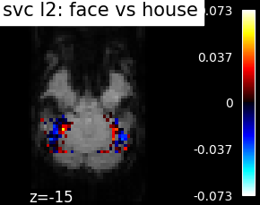
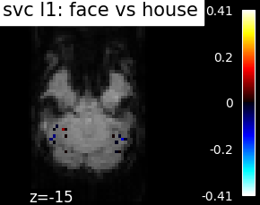
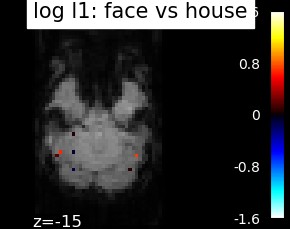
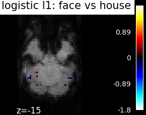
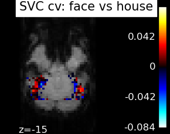

2.2. Choosing the right predictive model for neuroimaging¶
This page gives a few simple considerations on the choice of an estimator to tackle your decoding application, that is the prediction of external variables such as behavior or clinical traits from brain images. It is focusing on practical concepts to understand which prediction pipeline is well suited to your problem and how to implement it easily with Nilearn. This builds on concepts introduced in this didactic introduction to decoding with nilearn.
Contents
2.2.1. Predictions: regression, classification and multi-class¶
As seen in the previous section, high-level objects in Nilearn help you decode easily your dataset using a mask and/or feature selection. You can tune the cross-validation and scoring schemes of your model. Those objects come in two kinds, depending on your usecase : Regression or Classification.
2.2.1.1. Regression¶
A regression problem is a learning task in which the variable to predict
–that we often call y – is a continuous value, such as an age.
Encoding models [Naselaris et al. 1] typically call for regressions.
nilearn.decoding.DecoderRegressor implement easy and efficient
regression pipelines.
See also
nilearn.decoding.FREMRegressor, a pipeline described in the userguide, which yields very good regression performance for neuroimaging at a reasonable computational cost.
2.2.1.2. Classification: two classes or multi-class¶
A classification task consists in predicting a class label for each observation. In other words, the variable to predict is categorical.
Often classification is performed between two classes, but it may well be applied to multiple classes, in which case it is known as a multi-class problem. It is important to keep in mind that the larger the number of classes, the harder the prediction problem.
nilearn.decoding.Decoder implement easy and efficient
classification pipelines.
Some estimators support multi-class prediction out of the box, but many work by dividing the multi-class problem in a set of two class problems. There are two noteworthy strategies:
- One versus All
sklearn.multiclass.OneVsRestClassifierAn estimator is trained to distinguish each class from all the others, and during prediction, the final decision is taken by a vote across the different estimators.- One versus One
sklearn.multiclass.OneVsOneClassifierAn estimator is trained to distinguish each pair of classes, and during prediction, the final decision is taken by a vote across the different estimators.
The “One vs One” strategy is more computationally costly than the “One vs All”. The former scales as the square of the number of classes, whereas the latter is linear with the number of classes.
See also
nilearn.decoding.FREMClassifier, a pipeline described in the userguide, yielding state-of-the art decoding performance.
Confusion matrix The confusion matrix,
sklearn.metrics.confusion_matrix is a useful tool to
understand the classifier’s errors in a multiclass problem.
2.2.2. Different linear models¶
Using Nilearn high-level objects, several estimators are easily available
to model the relations between your images and the target to predict.
For classification, nilearn.decoding.Decoder let you choose them
through the estimator parameter:
svc (same as svc_l2) : The support vector classifier.
svc_l1 : SVC using L1 penalization that yields a sparse solution : only a subset of feature weights is different from zero and contribute to prediction.
logistic (or logistic_l2) : The logistic regression with l2 penalty.
logistic_l1 : The logistic regression with l1 penalty (sparse model).
ridge_classifier : A Ridge Regression variant.
dummy classifier : A dummy classifier is a classifier that makes predictions using simple rules. It is useful as a simple baseline to compare with other classifiers.
In nilearn.decoding.DecoderRegressor you can use some of these objects counterparts for regression :
svr : Support vector regression.
ridge_regressor (same as ridge) : Ridge regression.
dummy_regressor : A dummy regressor is a regressor that makes predictions using simple rules. It is useful as a simple baseline to compare with other regressors.
Note
There is no free lunch: no estimator will work uniformly better in every situation.
The SVC-l2 is fairly insensitive to the choice of the regularization parameter which makes it a good and cheap first approach to most problems
The ridge is fast to fit and cross-validate, but it will not work well on ill-separated classes, and, most importantly give ugly weight maps
Whenever a model uses sparsity (have l1 in its name here) the parameter selection (amount of sparsity used) can change result a lot and is difficult to tune well.
What is done to the data before applying the estimator is often more important than the choice of estimator. Typically, standardizing the data is important, smoothing can often be useful, and nuisance effects, such as session effect, must be removed.
Many more estimators are available in scikit-learn (see the scikit-learn documentation on supervised learning). To learn to do decoding with any of these, see : Running scikit-learn functions for more control on the analysis

The corresponding weight maps (below) differ widely from one estimator to the other, although the prediction scores are fairly similar. In other terms, a well-performing estimator in terms of prediction error gives us little guarantee on the brain maps.
    2.2.3. Setting estimator parameters¶
Most estimators have parameters (called “hyper-parameters”) that can be set to optimize their performance to a given problem. By default, the Decoder objects in Nilearn already try several values to roughly adapt to your problem.
If you want to try more specific sets of parameters relevant to the model your using, you can pass a dictionary to param_grid argument. It must contain values for the suitable argument name. For example SVC has a parameter C. By default, the values tried for C are [1,10,100].
Note
Full code example on parameter setting can be found at : Setting a parameter by cross-validation
Be careful about overfitting. Giving a grid containing too many parameter close to each other will be computationnaly costly to fit and may result in choosing a parameter that works best on your training set, but does not give as good performances on your data. You can see below an example in which the curve showing the score as a function of the parameter has bumps and peaks due to this noise.
2.2.4. Bagging several models¶
Bagging is a classical machine learning method to create ensemble of models that usually generalize to new data better than single model. The easiest way is to average the prediction of several models trained on slightly different part of a dataset and thus should have different bias that may cancel out.
The nilearn.decoding.Decoder and nilearn.decoding.DecoderRegressor
implement a kind of bagging scheme under the hood in their fit method to
yield better and more stable decoders. For each cross-validation fold,
the best model coefficients are retained. The average of all those linear
models is then used to make predictions.
See also
The scikit-learn documentation has very detailed explanations on a large variety of estimators and machine learning techniques. To become better at decoding, you need to study it.
FREM, a pipeline bagging many models that yields very good decoding performance at a reasonable computational cost.
SpaceNet, a method promoting sparsity that can also give good brain decoding power and improved decoder maps when sparsity is important.
2.2.5. References¶
- 1
Thomas Naselaris, Kendrick N. Kay, Shinji Nishimoto, and Jack L. Gallant. Encoding and decoding in fmri. NeuroImage, 56(2):400–410, May 2011. 20691790[pmid]. URL: https://pubmed.ncbi.nlm.nih.gov/20691790, doi:10.1016/j.neuroimage.2010.07.073.